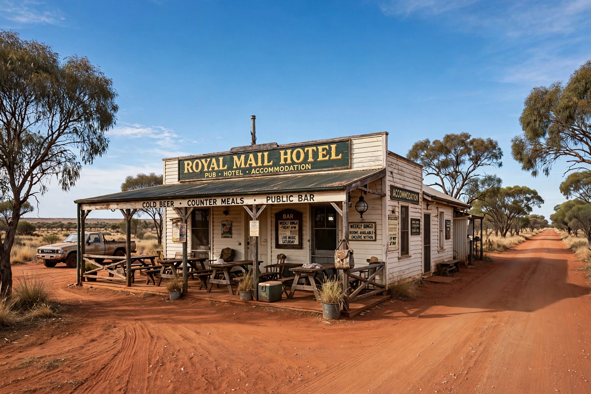

From Wikipedia, the free encyclopedia
| Birdsville | |
|---|---|
 The Birdsville Hotel | |
| State | Queensland, Australia |
| Population | 110 (approx.) |
| Postcode | 4482 |
| Location | 1,593 km west of Brisbane |
| LGA | Shire of Diamantina |
Birdsville is a small town and locality in the Shire of Diamantina, in the far western corner of Queensland, Australia. Situated on the edge of the Simpson Desert and near the Diamantina River, it is one of the most isolated settlements in the Australian outback. The town is best known for the Birdsville Races, an annual horse-racing carnival held on the first weekend of September that draws thousands of visitors, and the historic Birdsville Hotel, established in 1884.
The area was traditionally inhabited by the Wangkangurru Yarluyandi people. European exploration of the region followed the expeditions of Charles Sturt in the 1840s. The town was proclaimed in the early 1880s and grew as a stock-route hub for cattle droving between Queensland and South Australia, and as a customs collection point before Federation in 1901. The name is thought to derive either from the abundant birdlife around the Diamantina River billabongs or from an early storekeeper named Percy Bird.
Birdsville lies on the Birdsville Track, a famous outback road running 517 km south to Marree in South Australia. The climate is hot desert: summer temperatures regularly exceed 40 °C, and the town is frequently cited among Australia's hottest places, with a record high near 49 °C. Rainfall is low and erratic, though flooding of the Diamantina River and Georgina River systems can inundate the surrounding Channel Country.
Despite its small permanent population, Birdsville has a primary school, a police station, an airport, a medical clinic, and one of Australia's few geothermal power stations historically supplied electricity from a hot artesian bore.